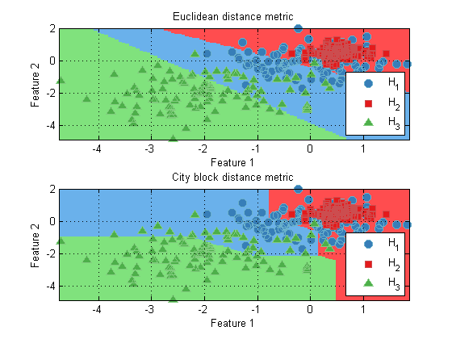

Contents
Distance functions in the Pattern Recognition Toolbox
The Pattern Recognition Toolbox provides a wide range of functionality for computing distance metrics between between vectors. The distance metrics work on the observation vectors of prtDataSets. The simplest distance is a Euclidean distance. Consider the following example:
% Create 2 data sets dsx = prtDataSetStandard('Observations', [0 0; 1 1]); dsy = prtDataSetStandard('Observations', [1 0;2 2; 3 3]); % Compute distance distance = prtDistanceEuclidean(dsx,dsy)
distance =
1.0000 2.8284 4.2426
1.0000 1.4142 2.8284
The above example computes the Euclidean distance from the data points [0 0] and [1 1] in the data set dsx to all the data points in dsy. The result is a double matrix, where distance(i,j) corresponds to the distance from the ith observation in dsx to the jth observation in dsy.
Distance functions as members of prtActions
prtDistance functions are intended to be used as part of prtActions, to determine the distance between observations for example. A common use of this would be in K-means clustering. Different distance metrics can lead to very different results in clustering, as the following example illustrates:
ds = prtDataGenMary; % Create a data set cluster = prtClusterKmeans; % Create a K-means clustering object cluster = cluster.train(ds); % Train subplot(2,1,1); plot(cluster) % Plot title('Euclidean distance metric') % Change the distance metric to City Block. cluster.distanceMetricFn = @prtDistanceCityBlock; cluster = cluster.train(ds); %Train subplot(2,1,2); plot(cluster) % Plot title('City block distance metric')
All distance functions in the Pattern Recognition Toolbox have the same API as discussed above. For a list of all the different techniques, and links to their individual help entries, A list of commonly used functions